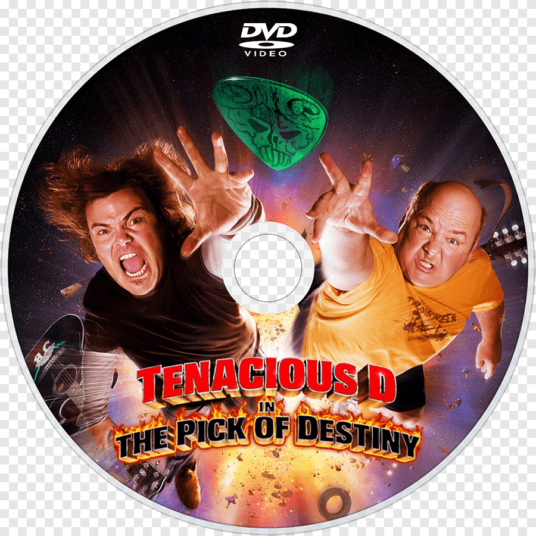

 Tenacious D is an American comedy rock duo formed in Los Angeles, California in 1994. It was founded by actors Jack Black and Kyle Gass, who were members of The Actors' Gang theater company at the time. The duo's name is derived from "tenacious defense", a phrase used by NBA basketball sportscasters Walt Frazier and Marv Albert.
In 2000, they signed with Epic Records and the year after released Tenacious D, their debut album featuring a full band, including Dave Grohl on the drums. Their second single, "Tribute", has achieved cult status since its release, contributing to their popularity in the United Kingdom, Sweden, Ireland and Australia.
In November 2006, they starred in their own film, Tenacious D in The Pick of Destiny, released by New Line Cinema, with Epic Records releasing the soundtrack as their second album, The Pick of Destiny. The film cost $20 million to produce, though only grossed $13.9 million at the box office and suffered mixed reviews from critics. Despite the poor reception of the actual film, the band would near sell-out arenas on its respective tour, including Madison Square Garden in New York.